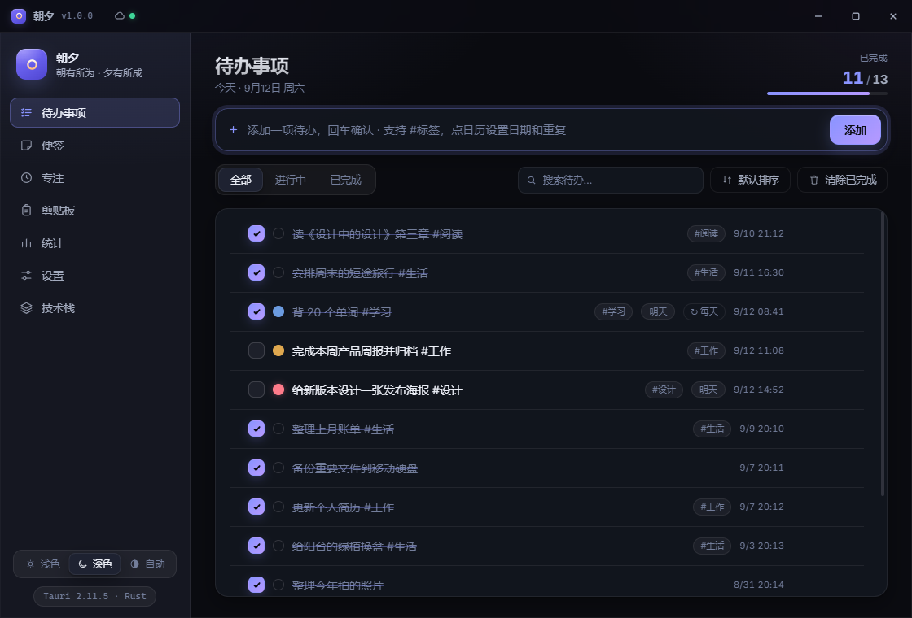
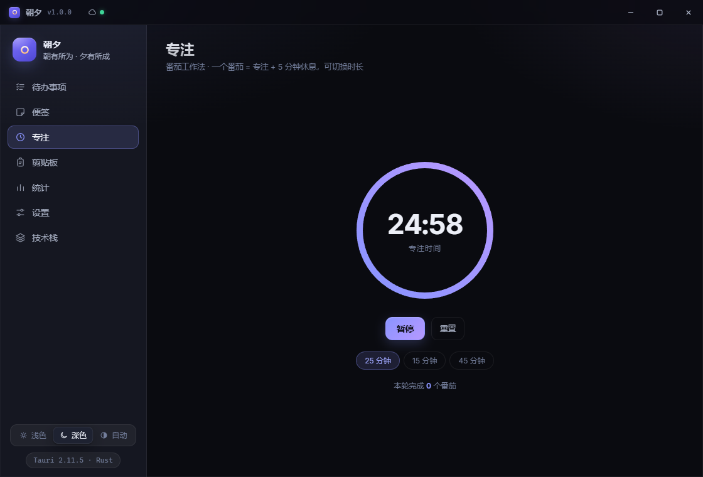

本地优先 · 数据不出电脑
朝夕
朝有所为，夕有所成。
一款安静、体面的 Windows 效率工作台。
待办、便签与专注，收进一处；所有数据，只留在你自己的电脑。
一款安静、体面的 Windows 效率工作台。
待办、便签与专注，收进一处；所有数据，只留在你自己的电脑。
标签、优先级、截止日与重复安排；拖拽即排序，回车即新增。完成的一刻，轻轻划掉。

数据以本机为准，云端只做安静的中转。换一台电脑，登录同一个账号，一切如约而至。
番茄钟与每日专注统计，把注意力花在真正重要的事情上。

随手记下的灵感，配色温柔，随取随用。
最近复制一触即达，只留在内存，不落盘。
完成趋势与专注时长，把进步看得见。
常驻托盘，一键呼出，不打断你的心流。
无论在哪，一个组合键即刻唤出。
清晨的浅色，深夜的深色，自动切换。
朝有所为，夕有所成。
把你的每一天，安放得井井有条。